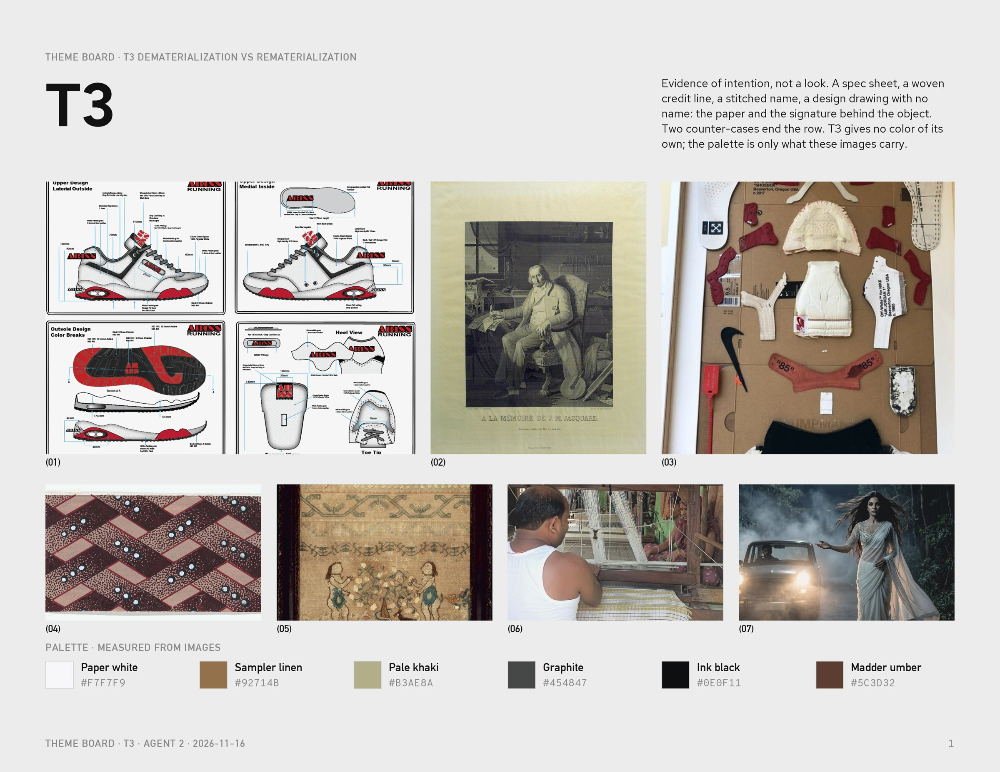

Theme T3 · Selected
Dematerialization vs rematerialization
T3 is the idea of authorship. Regardless of the materiality of the art object, it is what the artist envisions with intention.


Overall mood
Evidence of intention, not a look. A spec sheet, a woven credit line, a stitched name, a design drawing with no name: the paper and the signature behind the object. T3 sits behind the object, so this is not a color or surface board.


Definition and test
Owner's definition (Telegram, 2026-11-11, lightly cleaned; his words). T3 is the idea of authorship. Regardless of the materiality of the art object, it is what the artist envisions with intention. On intention (Owner, 2026-11-11): the success of an outcome is measured only by the gap between intention and result; if the intention is bad, nothing matters.
Owner's statement (chat, 2026-11-16; his words). "T3 is [what] I have been fighting as a designer, artist, producer of consumer goods. This is deeper than just 'appreciate hand-craft', my whole identity as a living organism depend on getting answer to this question, who am [I] when i make things, and what am i not when I don't make things." He confirmed T3 as the keystone of the ten themes the same day.
The test (Agent 7 draft, 2026-11-16; not confirmed by the Owner). Is the intention stated before the result? How large is the gap between the two, and who judged it? Where did care reach the material, and can that be seen? And the Owner's condition: if the intention is bad, nothing else matters. In image terms (my reading, to confirm): an image passes if the intention is written, drawn or stood for beside the result, or if it shows who did the making.
Limit (fact). A photograph cannot show intention or care. It can show the paper trail of one: an instruction, a credit, a signature, a decision left in view. This board collects those traces and does not claim to measure the gap.
Visual themes (the four motifs)
01 Instruction beside result. A score, spec, drawing or certificate with, or standing for, the thing made from it. Images (01), (02). Strong for (02); (01) is an instruction without the result.
02 A decision made visible on the object. A seam, a join, a cut left for the wearer, a label that withholds a name. Image (03) only: parts laid out on the box, printed text on a part, a zip tie. Weak, see open items.
03 A credited or uncredited hand. Who made it, shown or deliberately hidden. Images (05) credited by name, (04) uncredited ("Anonymous"), (02) credited to a firm in the weave itself.
04 The author who did not make by hand. Work fabricated by others to the author's specification. Image (02): woven by Didier, Petit et Cie after a painting by C. Bonnefond. (01) stands for the same position (a pack sent to a factory) but the factory is not named on this page.
Against (what T3 replaces)
Two opponents, shown as counter-cases and not tagged T3.
Output with no author (07). A generated look with no stated intention. Fact: the Commons file is CC0 and credited to an uploader named "Ai Fashion Model"; the generator's mark is visible at the lower right. Interpretation: it is the case the Owner's "who is in it?" question is aimed at.
Craft romance (06). The belief that the hand alone makes a thing authentic. Fact: a documentary photo of weavers at a hand loom; the uploader's own description calls it "a labor of love" with skills "passed down through generations". Interpretation: the photo is not romantic, the caption is. It is an honest counter-case because the romance is in the text that came with it. The Owner says T3 is deeper than appreciating hand-craft.
Visual story
Read the row as a chain of authorship. A drawing and a spec leave the author's hand (01, 04). A weave names its executor (02). A girl stitches her own name into a sampler (05). Someone takes a finished shoe apart and signs the frame (03). Then the two cases T3 argues against: the hand loom as comfort (06), the image with nobody in it (07).
Visual elements
Photography. Documents and object close-ups in true color; counter-cases in the standard grade. Type and graphics. Plain captions (the number only); no loud graphics. Layout habits. Paper, drawing and spec first; the counter-cases last and marked in the sources.
Candidates from 2026-11-10 (earlier "rematerialization" reading)
Moved from the loose Themes folder to 02 WIP/2026-11-16 Theme Board T3/reference/2026-11-10 T3 first-pass candidates.md. They were chosen for rematerialization; the authorship definition now governs.
- Kept as a likely fit, no image yet: Issey Miyake, A-POC (cut by the wearer from a tube; a decision left for the wearer, motif 02). The Image Collection holds one A-POC Able image (2026-11-11 SHOWstudio a-poc-able-02.jpg). I viewed it: heavily pleated gray cloth on a body. It shows the process result, not the cut or the decision, so I left it off the board and tag it T3? (see tagging).
- Dropped for now: Hesse (Hang Up), Asawa, Bontecou, Albers, Hicks, Abakanowicz, Stockholder. Why: each is about material presence and handling, which was the old reading; none shows instruction, credit or a delegated hand. Albers and Hicks may return under T1 or a material theme. Not found as open or cleared images either.
Hero material
None. T3 is behind the object; no material carries it. Paper and thread appear because they are where intention was written down (drawing, spec, stitched name, weave).
What we can learn
Specify with an intention line before sampling and a gap note after (Agent 7 draft, field 6). Credit who made what: designer, mill, factory, machine or model. Choose where workmanship of risk is allowed and shown. This board shows the form such a credit or instruction can take.
Relation to T9 and T10
T10 and T9 are about how an object feels and how it ages; T3 is about who stands behind it, so it does not compete for the same images. T3 sits underneath both: T10's care test (does the care show?) and T9's trace of time are T3's question asked of a surface and of a lifetime. A T3 image can also be a T9 or T10 image; the tag says which question it was chosen for.
Working notes from the research vault
Raw notes as kept in the vault: sources, readings and open questions. Interpretations are marked; unverified items say so.
Owner's statement (Owner, chat, 2026-11-16; his words)
"T3 is [what] I have been fighting as a designer, artist, producer of consumer goods. This is deeper than just 'appreciate hand-craft', my whole identity as a living organism depend on getting answer to this question, who am [I] when i make things, and what am i not when I don't make things."
The Owner confirmed T3 as the keystone of the ten themes on the same day (see Theme Framework). The two bracketed words are added for reading; the rest is as written.
Owner decisions, 2026-11-16 (second reply)
- T3 is selected. "T3 is selected, its the keystone."
- The candidate answer on authorship below is accepted ("everything is good to go").
- He wants a few publications by each person named in the development sections in the library. Not urgent. List: Library Wanted List.
T3 developed (Agent 7 draft, 2026-11-16)
Everything in this section is Agent 7's proposal unless it is marked Owner or Fact. Nothing here is settled until the Owner says so.
The question in two forms
- The maker's form (Owner). Who am I when I make things, and what am I not when I do not?
- The object's form (framework). When any appearance can be generated, what in an object still has to be true?
These are one question seen from two sides. The maker asks where he is in the thing. The buyer asks whether anyone is in it.
A tension inside the Owner's own statements
This is for discussion. It is not resolved here.
- (a) His definition: authorship is what the maker envisions with intention, regardless of the materiality of the object.
- (b) His statement above: his identity depends on making.
Read alone, (a) allows an author who never touches material. (b) says something of the self is missing when he does not make. Three of his own earlier points may connect the two:
- The gap. Success is measured only by the gap between intention and result (Owner). With no result there is nothing to measure, so an intention that never reaches material is not yet authorship.
- Care is not labor. Labor is exchange value; care is feeling that shows externally, and it is the medium he wants to work in (Owner, T10 note). Labor can be bought and handed over. Care cannot be bought, but it can travel: through his own hand, a factory's hands, or a machine.
- Care shows if it exists (Owner).
Accepted by the Owner, 2026-11-16 ("everything is good to go"). The answer, built only from those three: I am the author wherever my care reaches the material, by my hand, by another's, or by a machine's. I am not the author where only my labor or only my look reaches it. On this reading the designer and producer of consumer goods does make, though he does not sew. What he is not, when he does not make, is present: the object goes out with a look and nobody in it.
A harder reading is also possible and should be kept open: that the two cannot be joined, and that who a person is does not show in what he makes at all (Arendt, below).
Lenses from outside the library
None of these is in the PDF library and none has been read for this note. The one-line summaries are from general knowledge and must be checked against the texts before any use.
| Position | Source | What it is said to argue | What it gives the question |
|---|---|---|---|
| Making makes the self | Marx, Economic and Philosophic Manuscripts of 1844, "Estranged Labour" | A person sees himself in a world he has made; under wage labor he is cut off from the product, the activity, his own nature and other people | A direct account of "what am I not when I do not make" |
| Making makes the self | Scarry, The Body in Pain (1985), part two | A made object carries the maker's awareness of the body's needs out into the world, and then remakes the maker | Making as a need of a living organism, in his phrase |
| Making makes the self | Sennett, The Craftsman (2008) | Making is a form of thinking; argues against Arendt's split of laborer and maker | Already a candidate under T1 |
| The self is not in the making | Arendt, The Human Condition (1958) | Separates labor, work and action; what a person makes shows what he is, and only action and speech among others show who he is | The strongest counter-voice to the premise |
| The self is not in the making | Yanagi, The Unknown Craftsman (English adaptation 1972) | The most beautiful objects come from makers who are anonymous and do not assert a self | A counter-voice from Japanese craft thought; link to T8 |
| The self is not in the making | Barthes, "The Death of the Author" (1967); Foucault, "What Is an Author?" (1969) | The author is a function assigned by readers and institutions, not a source | Link to T4 |
| The author need not make | LeWitt, "Paragraphs on Conceptual Art" (1967) | The idea does the work and execution is secondary | The art-world form of the design-for-manufacture position |
| The author need not make | Moholy-Nagy, the enamel "telephone pictures" (1922 or 1923) | Paintings ordered from a sign factory by specification; whether a telephone was used is disputed | The earliest image of a designer authoring through a factory. Fact: the library holds a different Moholy-Nagy text, not this story |
| How it is made matters | Pye, The Nature and Art of Workmanship (1968) | Workmanship of risk (the result depends on judgment and care during making) against workmanship of certainty (the result is fixed in advance) | A working vocabulary for production: where in a product is risk allowed? |
| How it is made matters | Ingold, Making (2013) | Against the idea that a maker imposes a finished form on passive matter; form grows in exchange with the material | Asks whether a gap between intention and result is always a failure |
| How it is made matters | Ruskin, "The Nature of Gothic" (1853) | The worker's freedom shows in imperfection | The root of the craft romance the Owner says T3 goes deeper than |
Read 2026-11-16: Moholy-Nagy, "Make a Light Modulator" (Minicam, March 1940; in Kostelanetz, ed., Moholy-Nagy: An Anthology, pp. 99 to 104). Fact, from the text: he calls the camera and darkroom equipment only the "typewriter" of picture-making, and says quality depends on the operator. He also says each student's paper modulator shows its maker's own invention and interests, so little instruction is needed. Interpretation: this is the T3 position in a workshop form. The tool does not author, and the same exercise gives a different object from each hand. Full notes on the reading card.
Already in the library: Lippard (two texts, read; reading notes linked below), Benjamin's "Work of Art" essay (reading card), log entries for Joseph Kosuth, Robert Morris, Martin Margiela, Rei Kawakubo, Issey Miyake and A-POC (most still "Why: to confirm").
The eight fields
- Claim (Owner). Authorship: what the maker envisions with intention, regardless of the materiality of the object.
- Against. Two opponents. First, output with no author: a look generated, copied or trend-following, with no stated intention. Second, craft romance: the belief that the hand alone makes a thing authentic. The Owner: this is deeper than appreciating hand-craft.
- Test. Is the intention stated before the result? How large is the gap between the two, and who judged it? Where did care reach the material, and can that be seen? And the Owner's condition: if the intention is bad, nothing else matters.
- Sources. As listed above. Reading order suggested: Pye and Arendt first (shortest route to the working vocabulary and the strongest objection), then Marx and Scarry.
- Story. - Driver: two, one old and one new. Designing and making were separated by industry long ago. Generation by model now also separates designing from the designer. Unverified as market facts. - Tension: the maker cannot find himself in the product, and the buyer cannot find anyone in it. - Answer: authorship as a stated intention, carried by care through any means, and judged by the gap. - Mechanism: see field 6. - Evidence: theory mostly unread. Precedent in LeWitt, Moholy-Nagy, Margiela, Kawakubo and A-POC. Signal not collected.
- Translation. T3 sits behind the object, so it gives no palette of its own. It gives practice: - An intention line on every specification, written before sampling, and a gap note written after. - Chosen places in a product where workmanship of risk is allowed and shown, and places where certainty is required. - Credit for who made what: designer, mill, factory, machine or model. - For the board: instruction beside result; a decision made visible; a credited hand; a tolerance.
- Variation. None yet.
- Signals (to be dated with Agent 1). Products that name both designer and maker; rules or habits of labeling generated images in fashion communication; brands that publish process and not only origin. Against: no difference in price or loyalty where authorship is stated.
Proposed for Moral Simulation Run 001
Question: who is the author of an object its designer did not make by hand? It has the tension the playbook asks for, and the roles map onto the lenses: Defender (intention), Materialist (Marx and the apparatus), Practitioner (Pye and Sennett), Reverse Devil's Advocate (Yanagi: the best work has no author). The Owner decides whether to run it.
Summary (earlier framing, 2026-11-10)
Owner priority: rematerialization. Authenticity question is 'very timely'.
Sources
- Lippard: 2026-11-11 Lippard Dematerialization Reading Notes (Owner calls her text critical; his own summary not yet found). Library: Lippard and Chandler, The Dematerialization of Art; Lippard, Six Years.
- Eliasson and Irwin on dematerialization as dissolving the object into perception: 2026-11-11 Eliasson Irwin Take Your Time Reading Notes.